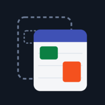

Relay privacy policy
Relay is a private scheduling tool used by a small team. It helps us keep project meetings and interviews in our Google Calendars, find free times across the team, and hand interviews from one person to another. It is not a public service and has no ads.
What Relay accesses
- Google Calendar. When you connect your Google account, Relay can read the calendars you can see (events and busy times) and add, change or remove events on calendars you are allowed to edit. It only does this when someone on the team uses Relay to check availability, schedule an interview or hand one over.
- Your email address and name from your Google account, so the team can see which account is connected.
- Photos of calendars that a team member takes in Relay. These are sent to Google’s Gemini service to read the meetings in them and are not kept afterwards.
What Relay stores
Relay keeps a sign-in token for each connected account and its settings in private storage inside the team’s own Google Apps Script project. Calendar events stay in Google Calendar; Relay does not keep its own copy of them.
Sharing
Relay does not sell or share your data with anyone, and does not use it for advertising or to train AI models. People on the team who use Relay can see what your connected calendars show, the same way calendar sharing in Google Calendar works.
Relay’s use of information received from Google APIs adheres to the Google API Services User Data Policy, including the Limited Use requirements.
Disconnecting
You can disconnect your account at any time in Relay (Settings → Accounts → Disconnect), or remove Relay at myaccount.google.com/permissions. Relay then deletes your sign-in token and can no longer reach your calendars. Events it already added stay in your calendar until you remove them.
Questions or requests to delete your data: use the support email shown on Google’s sign-in screen for Relay.